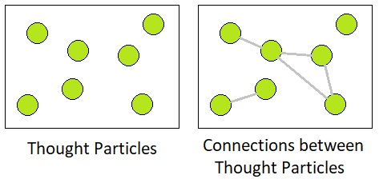

Just as physical materials can be thought of as groups of particles that have physical energy in them, our mental processes (such as emotions, memories, and so on) can be thought of as hypothetical particles that have psychological energy in them.
Thoughts are just as tangible as the so-called "rigid bodies" in Newtonian mechanics; they simply belong to a separate domain of existence, which can be described as the realm of collective unconscious as opposed to the realm of physical phenomena.
These "thought particles", as opposed to point masses which make up our physical universe, exist inside a Platonistic space filled with pure ideas. Similar to how atoms establish bonds with one another to form molecules, our thought particles connect with each other for the purpose of formulating more complex ideas.
